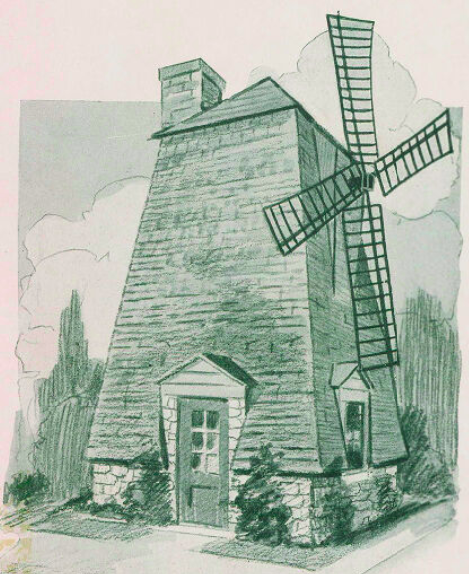

Old Dutch Mill

Figure 1. "Old Dutch Mill", from "Indian Village Country Club: Homes, Not Houses" (p. 10) by Emory J. Sweeney, 1923, "Missouri Valley Special Collections, Kansas City Public Library, Kansas City, Missouri."
An interesting neighborhood exists in South Kansas City, MO that most people have probably never heard about: Santa Fe Hills. I knew that it also went by the name of Indian Village, and what its boundaries are. I knew that this was not a typical neighborhood, as every single house has a different style, unlike other areas where I have lived. I also knew that there is a house on the land that was built by the Daniel Boone family.
I recalled that this neighborhood does not have any sidewalks, so when my parents took my brother, sister and I for a walk, we were always looking over our shoulder to make sure we did not get run over by a car. When Independence Day came, the neighborhood had a parade, and my parents would wake us up and tell us to get our bicycles. Then we would go along with the neighbors for the parade.
Years later I asked my dad why we never used the one-car garage that was in the back of the house. My dad told me because the house was built in the late 1930s, and the only type of car that would fit would be a narrow car from that era. I remember taking a right from the main road onto Sweeney Boulevard to get to our house, but I had no idea whom that street was named for.
Unfortunately, that is where my knowledge ended, until I read a wonderful blog post from Diane Euston a few years ago on this subject. She is obviously another sentimental person who has a lot of good childhood memories. The amount of effort and detail that she put into this story really shows. There is so much information and so many pictures, that I hope you will be interested in reading her entire post here: Santa Fe Hills
Important people in the founding of Santa Fe Hills, Kansas City, MO
- Daniel Boone
- Nathan Boone
- William Rockhill Nelson
- Emory J. Sweeney
- William T. Kemper, Sr.